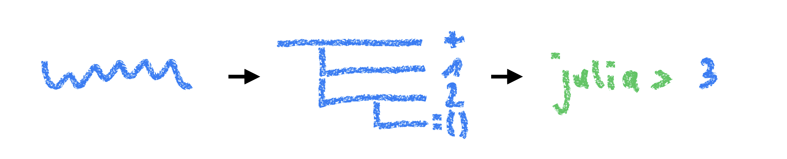
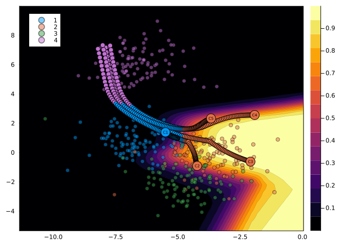

Expr
head: Symbol call
args: Array{Any}((2,))
1: Symbol sum
2: Expr
head: Symbol vect
args: Array{Any}((3,))
1: Int64 1
2: Int64 2
3: Int64 3A Leap of Faith into Julia’s Metaverse
Getting started with metaprogramming in Julia
metaprogramming
macros
Julia
In this slightly different post, I talk about my first experience with metaprogramming in Julia.
On this blog, I typically talk about things that I have some understanding of. In this post, I want to try something a little different and instead cover a topic that I am utterly clueless about. There’s an interesting aspect about Julia, which I know embarrassingly little about at this point: Metaprogramming.
Having worked with Julia for about 1.5 years now, I have so far employed a successful strategy of occasionally taking a glimpse at that part of the Julia documentation and then deciding to go back to pretending it never existed. Meanwhile, Karandeep Singh has stepped on the Julia scence around 5 minutes ago and already developed a package that literally oozes macro: Tidier.jl. The package API is such a joy to work with that I have felt inspired to finally take a serious look at what metaprogramming is all about.
My goal for this post is to get to the point where I can confidently write my first macro for CounterfactualExplanations.jl - more on this below! If you are as clueless and curious about the topic as I am, then follow along on a journey into the metaverse. Buckle in though, it’s going to be a bumpy ride! You have been warned.
🤔 All right, where to start?
You guessed it, we’ll start with the official Julia documentation on the topic:
Like Lisp, Julia represents its own code as a data structure of the language itself.
Hmmm … I know nothing about Lisp and this is already beyond me. Code as a data structure?
Let’s first try to understand what exactly metaprogramming is, outside of Julia and Lisp. We’ll take a quick detour before we’re back. Wikipedia has the following to say on the topic:
Metaprogramming is a programming technique in which computer programs have the ability to treat other programs as their data.
Right … What about ChatGPT? I wanted to try out ReplGPT anyway so here goes1:
julia> using ReplGPT
ChatGPT> Hey hey, can you please explain metaprogramming to me (I have no computer science background, but am experienced with programming and data science)
Metaprogramming is a programming technique where a program is capable of creating or manipulating code at
runtime. It involves writing computer programs that create, modify, or analyze other computer programs or data
about those programs.So, in layman’s terms, metaprogramming involves code that generates code - I guess we really have entered the metaverse!
📖 Julia docs
Let’s head back to the Julia documentation (v1.8) and look at the first couple of examples.
Code as Data Structures
Skipping the details here, it turns out that when I write 1 + 1 in the REPL, Julia first parses this program as a string "1 + 1 into an expression ex=:(1 + 1)::Expr, which is then evaluated eval(ex) (Figure 1). I’ve used a quote here to generate the expression because I’ve used quoting before for use with Documenter.jl.

And if I understand this correctly, the expression ex::Expr is literally code as a data structure:
That data structure can be “manipulated from within the language”.
Let’s try that! Currently, evaluating this expression yields the sum of the Array:
Upon manipulation (that sounds weird!), we have:
Ok ok, things are starting to make sense now!
Interpolation
Back to the Julia documentation and next on the agenda we have Interpolation. Skipping the details again, it seems like I can interpolate an expression much like strings. Using interpolation I can recreate the expression from above as follows:
Using string interpolation is quite similar:
Code
trueAnd much like with function arguments, we can also use splatting:
1×2×3 Array{Float64, 3}:
[:, :, 1] =
0.0 0.0
[:, :, 2] =
0.0 0.0
[:, :, 3] =
0.0 0.0Next off, we have nested quotes. I can’t see myself using these anytime soon but anyway it seems that for each $ sign that we prepend to x, an evaluation is trigged:
Moving on, we have QuoteNodes, which I will steer clear of because I probably won’t be doing any super advanced metaprogramming anytime soon. The next two sections on evaluating expressions and functions on Expressions also look somewhat more involved than what I need right now, but I expect I’ll find myself back here when I write that first macro for CounterfactualExplanations.jl.
Macros
Ahhh, I see we’ve finally arrived in Macroland!
A macro maps a tuple of arguments to a returned expression, and the resulting expression is compiled directly rather than requiring a runtime eval call.
Let’s see if we can make sense of this as we move on. The Hello, world! example makes the concept quite clear:
Code
Hello, readerIt seems that a macro is a way to build and return expressions inside a block (a bit like a function) but on call that expression is immediately evaluated. In other words, we can use macros to write code that generates code that is then evaluated.
To fully grasp the next part, I should have not skipped the part on functions on Expressions. We’ll leave that little nugget for Future Me. That same guy will also have to suffer the consequences of Present Me merely skimming the details in the next section on macro invocation. Present Me is impatient and overly confident in the level of knowledge that we have just acquired about metaprogramming.
Let’s get ahead of ourselves and meet the final boss of the metaverse: an Advanced Macro.
🔥 BUILD AN ADVANCED MACRO
I’ll leave it to you to thoroughly read that section in the Julia docs. Here, we’ll jump straight into building the macro I want to have for CounterfactualExplanations.jl. I now think it’ll be less involved than I thought — optimism in the face of uncertainty!
From Off-the-Shelf Counterfactual Generators …
CounterfactualExplanations.jl is a package for generating Counterfactual Explanations for predictive models \(f: \mathcal{X} \mapsto \mathcal{Y}\). This is a relatively recent approach to Explainable AI that I am (probably a little too) excited about and won’t dwell on here. For what follows, it suffices to say that generating Counterfactual Explanations can be seen as a generative modelling task because it involves generating samples in the input space: \(x \sim \mathcal{X}\). To this end, the package has previously shipped with a number of Generators: composite types that contain information about how counterfactuals ought to be generated.
This has allowed users to specify the type of generator they want to use by instantiating it. For example, the DiCE generator by Mothilal, Sharma, and Tan (2020) could (and still can) be instantiated as follows:
This has been a straightforward way for users to use off-the-shelf counterfactual generators. But relying on separate composite types for this task may have been an overkill. In fact, all this time there was some untapped potential here, as we will see next.
… To Composable Generators
One of my key objectives for the package has always been composability. It turns out that many of the various counterfactual generators that have been proposed in the literature, essentially do the same thing: they optimize an objective function. In Altmeyer et al. (2023), we denote that objective formally as follows,
\[ \begin{aligned} \mathbf{s}^\prime &= \arg \min_{\mathbf{s}^\prime \in \mathcal{S}} \left\{ {\text{yloss}(M(f(\mathbf{s}^\prime)),y^*)}+ \lambda {\text{cost}(f(\mathbf{s}^\prime)) } \right\} \end{aligned} \tag{1}\]
where \(\text{yloss}\) denotes the main loss function and \(\text{cost}\) is a penalty term. I won’t cover this in any more detail here, but you can read about it in the package docs. The important thing is that Equation 1 very closely describes how counterfactual search is actually implemented in the package.
In other words, all generators currently implemented share a common starting point. They largely just vary in the exact way the objective function is specified. This gives rise to an interesting idea:
Why not compose generators that combine ideas from different off-the-shelf generators?
I want to give users an easy way to do that, without having to build custom Generator types from scratch. This (I think) is a good use case for metaprogramming.
Let’s try and see if we can make that work. We’ll simply extend CounterfactualExplanations right here in this repo hosting the blog (easily done in Julia) and provided everything works out well create a pull request. I already have a GitHub issue for this with a linked branch, so that’s the one I’ll use in my environment:
(metaprogramming) pkg> add https://github.com/JuliaTrustworthyAI/CounterfactualExplanations.jl#118-add-losses-and-penalties-modules-or-group-under-objectives-module
julia> using CounterfactualExplanationsBy the time you’re reading this, all changes to that branch will have hopefully already been committed and merged.
Let’s start by instantiating a generic generator:
Our goal is to create macros that build expressions that, when evaluated, mutate the generator instance.
Define your @objective
Our first and most important macro shall define the counterfactual search objective. In particular, the @objective macro should accept an expression that looks much like the right-hand-side of Equation 1, which is essentially just a weighted sum.
@objective macro.Let’s start with that part. Naively, we could begin by writing it out very literally:
Of course, evaluating this expression throws an error because none of the variables are actually defined. Let’s work on that …
For the loss and penalty functions, we will use methods available from the CounterfactualExplanations.Objectives module, while for \(\lambda\) we will use a literal:
Let’s try to make sense of the data structure we have created:
My first naive approach is shown below. It errors because I forgot to interpolate the variables inside the quote.
macro objective(generator, ex)
loss = ex.args[2]
ex_penalty = ex.args[3]
λ = ex_penalty.args[2]
cost = ex_penalty.args[3]
ex_generator = quote
generator.loss = loss
generator.cost = cost
generator.λ = λ
end
return ex_generator
endHaving fixed that below, I still get an error because loss and cost functions are not part of the global scope. I am pretty sure that this error would have occurred anyway and has nothing to do with the fact that I’m writing a macro.
macro objective(generator, ex)
loss = ex.args[2]
ex_penalty = ex.args[3]
λ = ex_penalty.args[2]
cost = ex_penalty.args[3]
ex_generator = quote
$generator.loss = $loss
$generator.cost = $cost
$generator.λ = $λ
end
return ex_generator
endInstead of importing the functions, I just get them explicitly from the Objectives module,
Code
macro objective(generator, ex)
loss = getfield(CounterfactualExplanations.Objectives, ex.args[2])
ex_penalty = ex.args[3]
λ = ex_penalty.args[2]
cost = getfield(CounterfactualExplanations.Objectives, ex_penalty.args[3])
ex_generator = quote
$generator.loss = $loss
$generator.penalty = $cost
$generator.λ = $λ
generator
end
return ex_generator
endand, finally, this works:
CounterfactualExplanations.Generators.GradientBasedGenerator(Flux.Losses.logitbinarycrossentropy, CounterfactualExplanations.Objectives.distance_l2, 0.1, false, false, Flux.Optimise.Descent(0.1))But what about adding multiple penalties? The DiCE generator, for example, also takes into account how diverse the counterfactual explanations are (Mothilal, Sharma, and Tan 2020). The corresponding penalty is called ddp_diversity. Let’s start with the expression again:
4-element Vector{Any}:
:+
:logitbinarycrossentropy
:(0.1distance_l2)
:(1.0ddp_diversity)This time there’s a second nested Expression among the arguments: :(1.0ddp_diversity).
Code
macro objective(generator, ex)
loss = getfield(CounterfactualExplanations.Objectives, ex.args[2])
Λ = Vector{AbstractFloat}()
costs = Vector{Function}()
for i in 3:length(ex.args)
ex_penalty = ex.args[i]
λ = ex_penalty.args[2]
push!(Λ, λ)
cost = getfield(CounterfactualExplanations.Objectives, ex_penalty.args[3])
push!(costs, cost)
end
ex_generator = quote
$generator.loss = $loss
$generator.penalty = $costs
$generator.λ = $Λ
generator
end
return ex_generator
endThat works well,
CounterfactualExplanations.Generators.GradientBasedGenerator(Flux.Losses.logitbinarycrossentropy, Function[CounterfactualExplanations.Objectives.distance_l2, CounterfactualExplanations.Objectives.ddp_diversity], AbstractFloat[0.05, 1.0], false, false, Flux.Optimise.Descent(0.1))but we should still make sure that this generator is also compatible with our package. Below we go through some of the typical workflows associated with Counterfactual Explanations. Firstly, we load some synthetic data and fit a black-box model to it.
Next, we begin by specifying our target and factual label. We then draw a random sample from the non-target (factual) class.
Finally, we use our generator to generate counterfactuals:
It worked! 🎉 The resulting counterfactual search is illustrated in Figure 2. I may have overspecified the size of the ddp_diversity penalty a little bit here, but it sure makes for a cool chart!

Time for me to add this all to CounterfactualExplanations.jl … ⏳
🧼 Hygiene
… aaand I’m back. There was one thing I had ignored that ended up causing a minor complication: macro hygiene.
Again, I’ll leave it to you to read up on the details, but the bottom line is that when writing macros, we need to keep variable scopes in mind. CounterfactualExplanations.jl is composed of various (sub)modules, and when I initially added the macro to the CounterfactualExplanations.Generators module, it errored.
The problem was (I believe) that the generator variable existed in the global scope (Main) but it was not accessible for the @objective macro that at runtime lives in Main.Generators. Fortunately, it is easy to make the variable accessible by wrapping it inside an esc() call:
This escaping mechanism can be used to “violate” hygiene when necessary, in order to introduce or manipulate user variables.
This may not be the ideal way to do this, and as always, if you have any suggestions I’d be happy to hear about them.
If you want to find out more about how macros can now be used to easily compose counterfactual generators, check out the new section in the package documentation.
🌯 Wrapping Up
In this blog post, I’ve done something I usually try to avoid: talk about things I don’t know. Metaprogramming is an exciting topic and if you’re still here, you just got to experience it through the lens of an absolute novice. During our leap of faith into Julia’s metaverse we’ve learned the following things:
- Code in Julia is internally represented as a mutable data structure.
- Macros are a way to take such data structures and transform them before they get evaluated at runtime.
- An important thing to keep in mind when writing macros is variable scopes.
Throughout this post, I have skipped various important details that (I think) were not immediately relevant to the goal I had in mind: adding my first macro to CounterfactualExplanations.jl. In the future, I may write about this topic again and cover some of these missing details (hopefully with a bit more insight at that point!).
🎓 References
Altmeyer, Patrick, Giovan Angela, Aleksander Buszydlik, Karol Dobiczek, Arie van Deursen, and Cynthia CS Liem. 2023. “Endogenous Macrodynamics in Algorithmic Recourse.” In 2023 IEEE Conference on Secure and Trustworthy Machine Learning (SaTML), 418–31. IEEE.
Mothilal, Ramaravind K, Amit Sharma, and Chenhao Tan. 2020. “Explaining Machine Learning Classifiers Through Diverse Counterfactual Explanations.” In Proceedings of the 2020 Conference on Fairness, Accountability, and Transparency, 607–17. https://doi.org/10.1145/3351095.3372850.
Footnotes
A very cool package! Funny story, though, I somehow managed to commit my OpenAI API key to GitHub on the first go (developing)↩︎
Citation
BibTeX citation:
@online{altmeyer2023,
author = {Altmeyer, Patrick},
title = {A {Leap} of {Faith} into {Julia’s} {Metaverse}},
date = {2023-03-13},
url = {https://www.paltmeyer.com/blog//blog/posts/meta-programming},
langid = {en}
}
For attribution, please cite this work as:
Altmeyer, Patrick. 2023. “A Leap of Faith into Julia’s
Metaverse.” March 13, 2023. https://www.paltmeyer.com/blog//blog/posts/meta-programming.